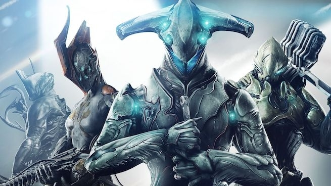

Litaskali í bakgrunni
Meðfylgjandi verkefninu er .zip skrá með 2 vefsíðum sem þú átt að tengja saman. Normalize.css stílsíðan fylgir með en aðal stílsíðuna vantar. Þú átt að búa hana til og tengja við vefsíðurnar. Skipulag síðunnar á að vera svipað því sem sýnt er hér á vefsíðunni en lita- og leturval er frjálst
Þegar skjár er minni en 60em (960px) þá á textinn í vefsíðunni að dragast saman og vera sýnilegur, prófaðu að nota stílbragðið "max-with".
Þetta vefdæmi er að hluta til byggt á verkefnadæmi á vef Shayhowe, Gradient backrounds en þar sem hann hefur ekki uppfært vefinn notar hvorki flexbox eða grid lausinr er ekki hægt að fara eftir hans uppsetningu

Hér er bakgrunnurinn hvítur með 50% gagnsæi (e. transparency).
Til að skoða kóðann í vafra þá skaltu opna vafra (Chrome) og smella á ☰ táknið hægra megin í valslánni og velja "Developers tools" úr fellilistanum.
Eða bara smella á takkann F12 á lyklaborðinu, "Inspectorinn" virkar svipað í Firefox og Chrome
© 2018